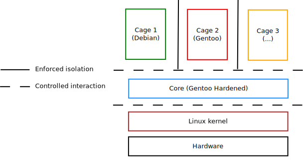
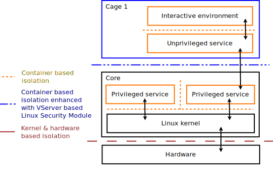
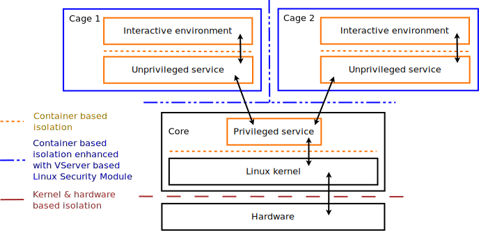

Architecture¶
System components and their interactions¶
A CLIP OS system is split into several logically separated entities:
- A bootloader and an initial EFI binary responsible for the system start-up.
- A Core responsible for system service hosting and sub environments (called Cages from now on) start-up. The Core is also responsible for the isolation and control of all interactions between those Cages.
- One or several Cages usually available as graphical sessions for users. Each Cage may host applications and documents from a specific confidentiality level.

Fig. 1 High level overview of CLIP OS components
The execution environment of each Cage is logically isolated from the Core and from all the other Cages. Interactions between a Cage and the Core is carefully controlled and goes through confined and unprivileged services as shown in Fig. 2.

Fig. 2 Communication channels between a Cage, the Core and the hardware
Direct communication between Cages is forbidden. All inter-Cage interaction is mediated by services running in the Core.

Fig. 3 Flow of interaction required for inter-level communications